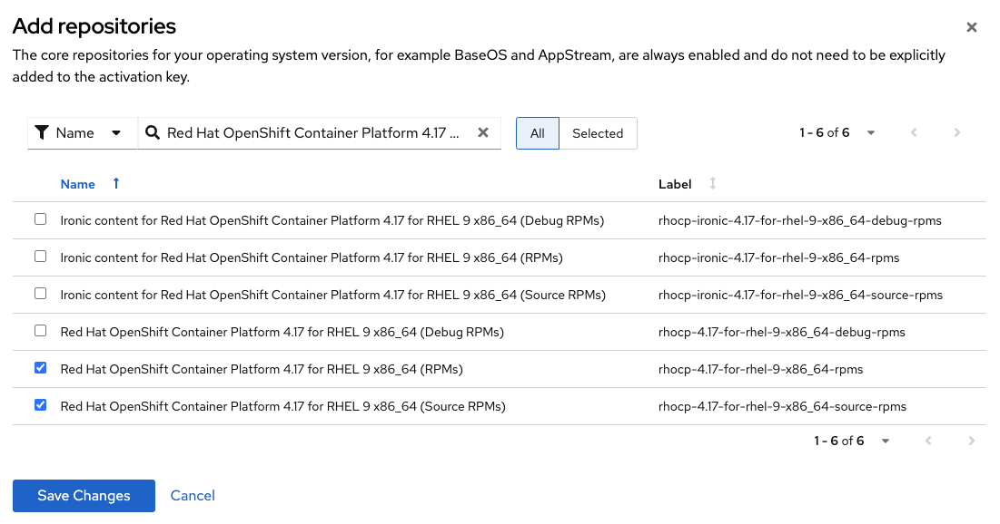
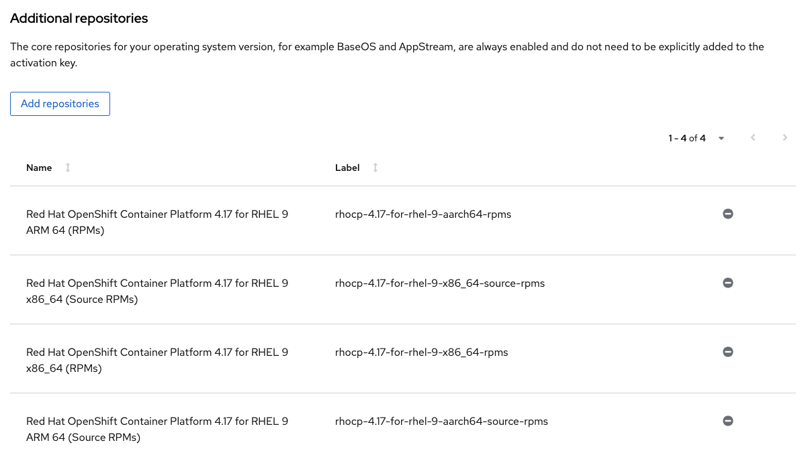

Using Red Hat activation keys to access subscription content
Most Red Hat software requires a subscription to access. Activation keys are the preferred method for using Red Hat subscriptions with Konflux builds and are supported by the all types of container builds, including hermetic builds using the prefetch-dependencies task.
| Previously, mounting entitlement certificates directly as secrets was advocated but this is discouraged by Red Hat since those certificates are intended to be regularly revoked and refreshed by the subscription-manager system. Direct use of entitlement certificates is still supported by Konflux but discouraged. Entitlement certificate docs are here. |
To learn how to create an activation keys see the Red Hat documentation.
When your activation key is created, you will need to create a secret with two values: your "org id" and the name of your activation key.
Adding activation keys to the tenant namespace
You will need to create one or more secrets in your Konflux namespace (one per activation key). First, decide what to name the secrets and the scope they should have. You can control the scope of the activation key you add with the name.
Adding subscription entitlement for an entire tenant namespace
Both the buildah and prefetch-dependencies tasks accept an activation key with a default name of activation-key. If you use this name for your secret, all of the builds in your tenant namespace will automatically use the activation key.
Adding subscription entitlement for a specific component build
Sometimes, you only want certain builds to have the activation key, particularly when you need to have more than one key with different repository configurations in the same tenant namespace. To do this, choose a different name for your activation key secret (not activation-key). Then, add a parameter to the build task in your component’s pipeline run yaml:
kind: PipelineRun
spec:
pipelineSpec:
tasks:
# ...
- name: build-container
params:
- name: ACTIVATION_KEY
value: my-secret-name
|
Create the activation key secrets
Create activation key secret through the UI
-
Access the Secrets section in the konflux UI and click on Add secret.
-
Set the secret name to activation-key.
-
Add the first key with the name org and and set the value to your org id.
-
Add a second key with the name activationkey and set the value to the name of your activation key.
-
Save the secret by clicking Add secret
Create activation key secret through console
Alternatively, you can create the secret through the CLI. After logging into your cluster and navigating to your namespace, run the following command:
kubectl create secret generic activation-key -n <your-tenant> \
--from-literal=org=<your org id> \
--from-literal=activationkey=<your activation key name>Create custom activation key secret
Create custom activation key secrets with extra labels and annotations so that they can be matched to their repositories.
|
These secrets can only be created through the CLI:
kubectl create -f activation-key-secret.yaml# activation-key-secret.yaml
apiVersion: v1
kind: Secret
metadata:
name: custom-activation-key
namespace: <YOUR NAMESPACE>
labels:
appstudio.redhat.com/credentials: rpm
appstudio.redhat.com/scm.host: <source-control-management-host> # for example, gitlab.com
type: Opaque
stringData:
org: <YOUR ORG ID>
activationkey: <YOUR ACTIVATION KEY>This secret will be matched to all repositories with the same Git host. If you want to narrow the matching to specific repositories, you have to add the appstudio.redhat.com/scm.repository annotation to the secret metadata:
apiVersion: v1
kind: Secret
metadata:
name: custom-activation-key
namespace: <YOUR NAMESPACE>
labels:
appstudio.redhat.com/credentials: rpm
appstudio.redhat.com/scm.host: <source-control-management-host> # for example, gitlab.com
annotations:
appstudio.redhat.com/scm.repository: my-user/*
type: Opaque
stringData:
org: <YOUR ORG ID>
activationkey: <YOUR ACTIVATION KEY>This annotation will match the secret to all repositories in my-user organization. If you want to match the secret to a specific repository, the annotation should be defined as such:
apiVersion: v1
kind: Secret
metadata:
name: custom-activation-key
namespace: <YOUR NAMESPACE>
labels:
appstudio.redhat.com/credentials: rpm
appstudio.redhat.com/scm.host: <source-control-management-host> # for example, gitlab.com
annotations:
appstudio.redhat.com/scm.repository: my-user/my-repository
type: Opaque
stringData:
org: <YOUR ORG ID>
activationkey: <YOUR ACTIVATION KEY>Multiple repositories can be listed under the appstudio.redhat.com/scm.repository annotation. Separate repository names with commas when listing them. The secret will be used for all repositories that match the specified paths.
|
Using subscription content in a build
Non-hermetic (network connected) builds:
Automatic registration
The buildah task will use a provided activation key to register itself with Red Hat subscription manager and mount the necessary certificates to the build environment. Simply add dnf or yum install commands to your Containerfile.
If your activation key includes more than the default BaseOS and AppStream repositories, add the following command inside your Containerfile in order update repository metadata:
|
subscription-manager refreshExplicit registration
If you include a subscription-manager register command in your Containerfile, the buildah task
will disable automatic subscription service registration.
You can control subscription-manager directly using the normal commands.
|
The activation key secret is mounted into the build container. Use the following command to register with The secret will always be mounted in the same directory |
Hermetic (network isolated) builds:
The prefetch-dependencies task can use an activation key to register and fetch RPMs. All repositories configured for the activation key will be enabled for prefetch. If the default name was used for the secret (activation-key) no configuration is necessary. Otherwise, provide the ACTIVATION_KEY parameter to the build pipeline as noted above.
Configuring an RPM lockfile for hermetic builds
The rpm-lockfile-prototype tool uses live dnf metadata to resolve a given rpms.in.yaml file into an rpms.lock.yaml file in which every RPM is pinned to a repository and version. Because it uses live metadata, the configuration of package repositories on the system will influence the results.
Let’s explore a simple scenario that should illustrate all pertinent parts of the process.
We will create a lockfile that includes the openshift-clients RPM which:
-
requires a subscription to the OpenShift product
-
is not located in the default Red Hat Enterprise Linux repositories
-
is available for multiple architectures
This RPM is available in the following repositories:
architecture |
repository |
x86_64 |
rhocp-4.17-for-rhel-9-x86_64-rpms |
aarch64 |
rhocp-4.17-for-rhel-9-aarch64-rpms |
Create the activation key
Create a new activation key
Navigate to https://console.redhat.com/insights/connector/activation-keys and create a new activation key. Follow the instructions in the wizard.
Refer to the Red Hat documentation for additional information.
Add additional repositories to the key
Once the key is created, click "add repositories". Add all the applicable repositories for all architectures. If you want to build source containers include the corresponding source repositories as well.

When saved, your key should look something like this:

Note the name of the activation key and the org ID which can be found in the drop-down under your name in the top right corner of the screen. You will need both in a subsequent step to register the container using subscription-manager.
|
Configure rpm-lockfile-prototype
The goal of this procedure is to generate an RPM lockfile using the rpm-lockfile-prototype tool. This involves two major conceptual steps:
-
Obtaining Repository Config Files: You need access to
.repofiles that define the yum/dnf repositories for your target RHEL version and reflect the entitlements granted by your Red Hat subscription (via an activation key). -
Running the Lockfile Generation Tool: You need an environment capable of running the
rpm-lockfile-prototypetool and providing it with the repository configuration obtained in the first step.
The steps detailed below demonstrate a combined workflow where a single container is used both to generate the necessary .repo file (by registering with subscription-manager using your activation key) and to subsequently run the rpm-lockfile-prototype tool using that generated file. It is important to note that this is not a requirement and the two conceptual steps can be decoupled. For example, you could generate .repo files for RHEL 8 within a UBI 8 container (using an RHEL 8 activation key) and then use those files to run rpm-lockfile-prototype within a UBI 9 container to generate a RHEL 8 lockfile.
The container where you run rpm-lockfile-prototype does not need to match the RHEL version of your build—the execution environment only needs to meet the tool’s runtime prerequisites (e.g., Python ≥ 3.9). The key is to provide the tool with .repo files as input that accurately reflect the repositories of your target RHEL version.
For this step we will assume that you have source code in your current working directory $(pwd).
|
Follow these steps for the Combined Workflow:
-
Prepare a container environment where you can run both Red Hat
subscription-managerand therpm-lockfile-prototypetool. Ideally this is the same version of Red Hat Enterprise Linux as your build, but as noted above, does not have to be. Mount your source code directory into the container.In this example, we’ll using the Red Hat Enterprise Linux 9 Universal Base Image (UBI 9).
podman run --rm -it -v $(pwd):/source:Z registry.access.redhat.com/ubi9 -
Register with your activation key from the previous step:
subscription-manager register --activationkey="$KEY_NAME" --org="$ORG_ID"You may see a message saying subscription-manager is operating in container mode. Use your host system to manage subscriptions., which is not applicable if you’re running the container on Fedora or MacOS. -
Verify that you have the correct repositories and enable missing source repositories.
It is normal to only see the repositories for your current architecture at this stage. [root@ yum.repos.d]# dnf repolist --enabled Updating Subscription Management repositories. repo id repo name rhel-9-for-aarch64-appstream-rpms Red Hat Enterprise Linux 9 for ARM 64 - AppStream (RPMs) rhel-9-for-aarch64-baseos-rpms Red Hat Enterprise Linux 9 for ARM 64 - BaseOS (RPMs) rhocp-4.17-for-rhel-9-aarch64-rpms Red Hat OpenShift Container Platform 4.17 for RHEL 9 ARM 64 (RPMs) rhocp-4.17-for-rhel-9-aarch64-source-rpms Red Hat OpenShift Container Platform 4.17 for RHEL 9 ARM 64 (Source RPMs) ubi-9-appstream-rpms Red Hat Universal Base Image 9 (RPMs) - AppStream ubi-9-baseos-rpms Red Hat Universal Base Image 9 (RPMs) - BaseOS ubi-9-codeready-builder Red Hat Universal Base Image 9 (RPMs) - CodeReady Builder`In the example above, the source RPM repositories are not enabled for the following repositories:
ubi-9-appstream-rpms ubi-9-baseos-rpms ubi-9-codeready-builderTo enable the source RPM repositories, locate the appropriate RPM repositories in
redhat.repoand changeenabled = 0toenabled = 1:[rhocp-4.16-for-rhel-9-$basearch-rpms] name = Red Hat OpenShift Container Platform 4.16 for RHEL 9 $basearch (RPMs) baseurl = https://cdn.redhat.com/content/dist/layered/rhel9/$basearch/rhocp/4.16/os enabled = 1 ... [rhocp-4.16-for-rhel-9-$basearch-source-rpms] name = Red Hat OpenShift Container Platform 4.16 for RHEL 9 $basearch (Source RPMs) baseurl = https://cdn.redhat.com/content/dist/layered/rhel9/$basearch/rhocp/4.16/source/SRPMS enabled = 1 ... -
Install the tools needed to run rpm-lockfile-prototype:
-
Copy the default repository file configured by
subscription-managerto thesource/directory (the directory mounted from your host filesystem).cp /etc/yum.repos.d/redhat.repo /source/redhat.repo -
Substitute the current architecture with
$basearchinredhat.repoto facilitate fetching for multiple architecturessed -i "s/$(uname -m)/\$basearch/g" redhat.repo -
Authenticate to the Red Hat container registry using your Red Hat Customer Portal credentials:
skopeo login registry.redhat.io -
Configure
rpms.in.yaml. There are three things to configure:-
Add
./redhat.repoundercontentOrigin.repofilesinrpms.in.yaml -
Add the RPM we want Konflux to prefetch for hermetic builds (
openshift-clients) -
Configure the enabled architectures
The following is an example of what your
rpms.in.yamlfile should look like:contentOrigin: # Define at least one source of packages, but you can have as many as you want. repofiles: - ./redhat.repo packages: # list of rpm names to resolve - openshift-clients #reinstallPackages: [] # list of rpms already provided in the base image, but which should be # reinstalled arches: # The list of architectures can be set in the config file. Any `--arch` option set # on the command line will override this list. - aarch64 - x86_64 # - s390x # - ppc64le context: # Alternative to setting command line options. Usually you will only want # to include one of these options, with the exception of `flatpak` that # can be combined with `image` and `containerfile` containerfile: ContainerfileIn the source directory for this example there is a Containerfile named Containerfilewhich starts with the lineFROM registry.access.redhat.com/ubi9/ubi, which is the reason why we’re using a RHEL 9 UBI image to generate the lock file. -
-
Create the lock file
cd /source; rpm-lockfile-prototype -f Containerfile rpms.in.yamlIf you encounter SSL errors (
Problem with the local SSL certificates), make sure thesslclientkeyandsslclientcertoptions inredhat.reporesolve to the correct path on the file system. These options point to certificates and keys that use a unique identifier (e.g.,sslclientcert = /etc/pki/entitlement/$ID.pem). You may see SSL issues if you copied a repository configuration file from a different system/container registered with a different entitlement or activation key.If successful, you should see a
rpms.lock.yamlfile in the source directory:lockfileVersion: 1 lockfileVendor: redhat arches: - arch: x86_64 packages: - url: https://cdn.redhat.com/content/dist/layered/rhel9/x86_64/rhocp/4.16/os/Packages/o/openshift-clients-4.16.0-202410172045.p0.gcf533b5.assembly.stream.el9.x86_64.rpm repoid: rhocp-4.16-for-rhel-9-x86_64-rpms size: 54912665 checksum: sha256:0ffd7347620fd10bb75774520e571702361a6d0352de9112979693d003964038 name: openshift-clients evr: 4.16.0-202410172045.p0.gcf533b5.assembly.stream.el9 sourcerpm: openshift-clients-4.16.0-202410172045.p0.gcf533b5.assembly.stream.el9.src.rpm ...If you see warnings like “WARNING:root:No sources found for...” then there is a source repository that still needs to be enabled in your repository configuration. If so, and you need source RPMs, be sure to enable the source RPM repositories in redhat.repoand regenerate the lock file. -
Exit the container, and commit the
rpms.in.yaml,rpms.lock.yamlandredhat.repoto source control. Konflux will use these files to prefetch RPMs for hermetic builds. -
Reminder. You still need to enable prefetching for RPMs if this step hasn’t been done yet.